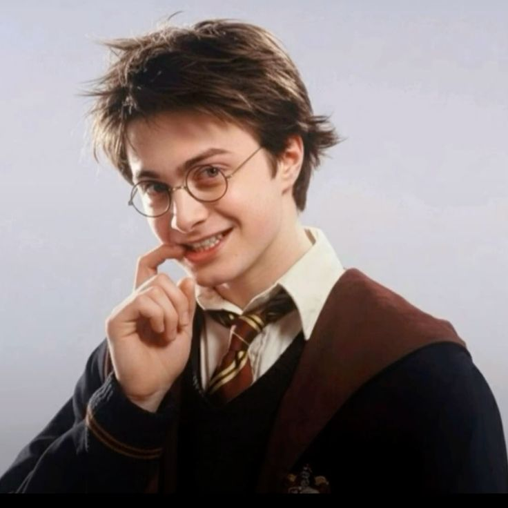

Harry Potter
Mago - Tiempo Completo.

Soy un mago valiente, con gran capacidad de aprendizaje y trabajo en equipo.
Mi objetivo es proteger el mundo mágico y seguir desarrollando mis habilidades.
Índice
Datos Personales
- Nombre: Harry James Potter
- Fecha de Nacimiento: 31 de julio de 1980
- Edad: 17 años
- Nacionalidad: Británico
Volver
Familia
- Padres: James Potter y Lily Potter
- Hermano: No tiene hermanos
- Parientes: Vernon Dursley y Petunia Dursley
- Padrino: Sirius Black
Volver
Estudios
- Escuela: Colegio Hogwarts de Magia y Hechicería
- Casa: Gryffindor
- Asignaturas: Defensa Contra las Artes Oscuras, Pociones, Encantamientos, Transformaciones, Herbología, Cuidado de Criaturas Mágicas
- Logros: Ganador de la Copa de Quidditch, Participante en el Torneo de los Tres Magos, Miembro del Ejército de Dumbledore
Volver
Experiencia
- Experiencia:
- Orden del Fénix: Miembro activo en la lucha contra Lord Voldemort y sus seguidores.
- Ministerio de Magia: Colaboración en misiones especiales para proteger el mundo mágico.
- Hogwarts: Participación en eventos escolares y actividades extracurriculares.
Volver
Habilidades
- Hechizos: Dominio de una amplia variedad de hechizos, incluyendo el Patronus, el Expelliarmus y el Expecto Patronum.
- Valor: Demostrado en numerosas ocasiones al enfrentarse a peligros y desafíos.
- Lealtad: Fuerte sentido de lealtad hacia sus amigos y seres queridos.
- Resiliencia: Capacidad para superar adversidades y seguir adelante.
Volver